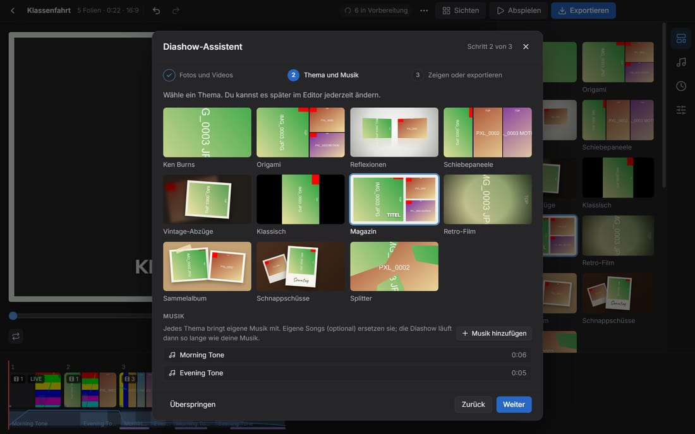
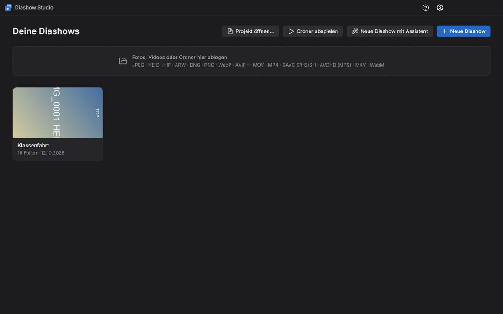
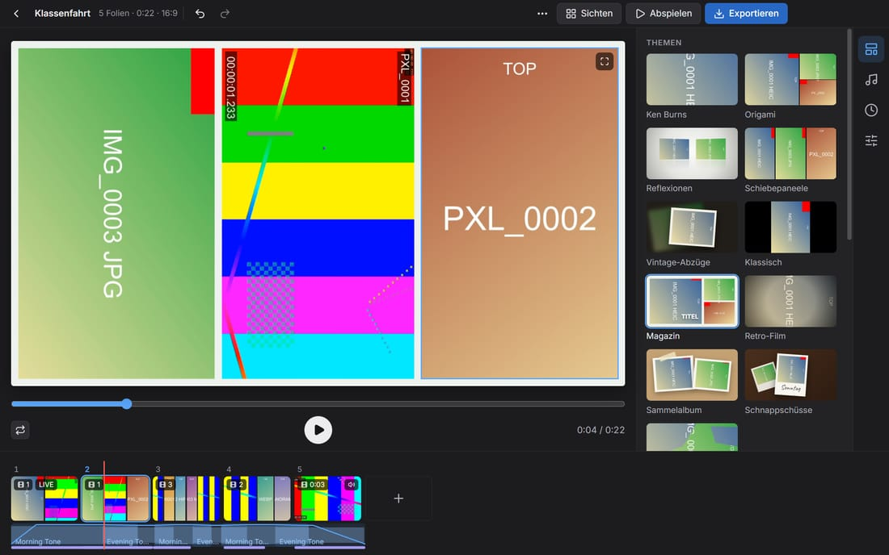
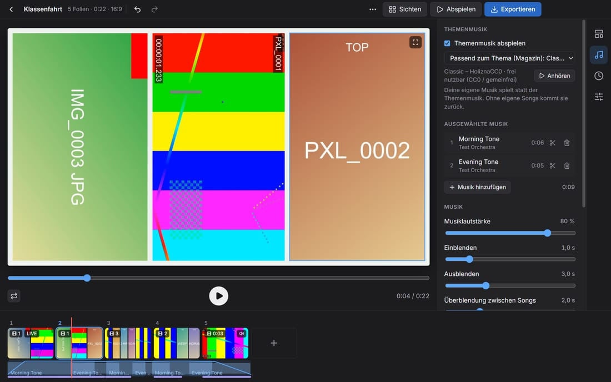
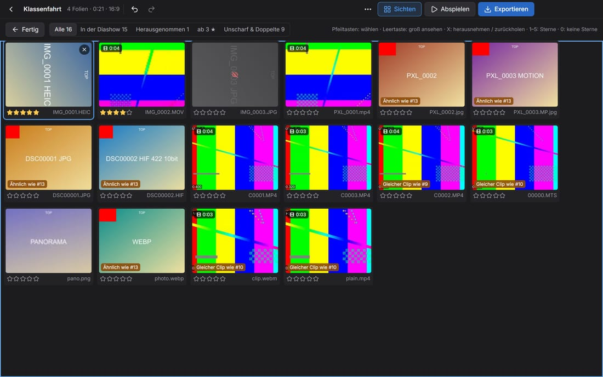
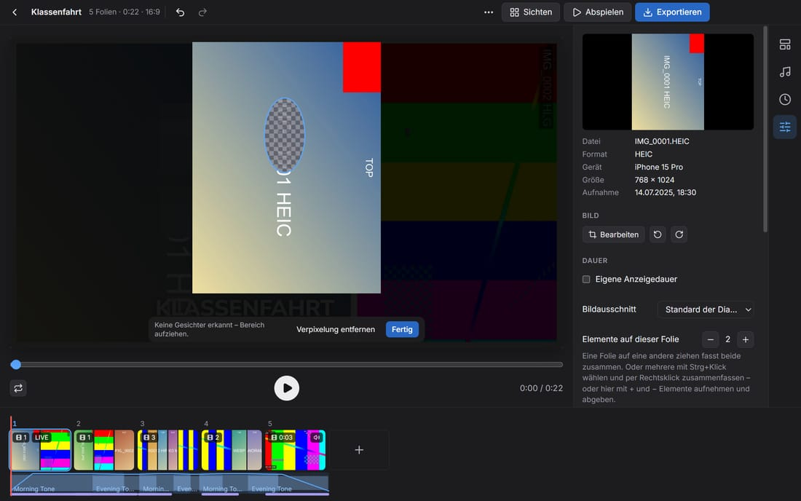
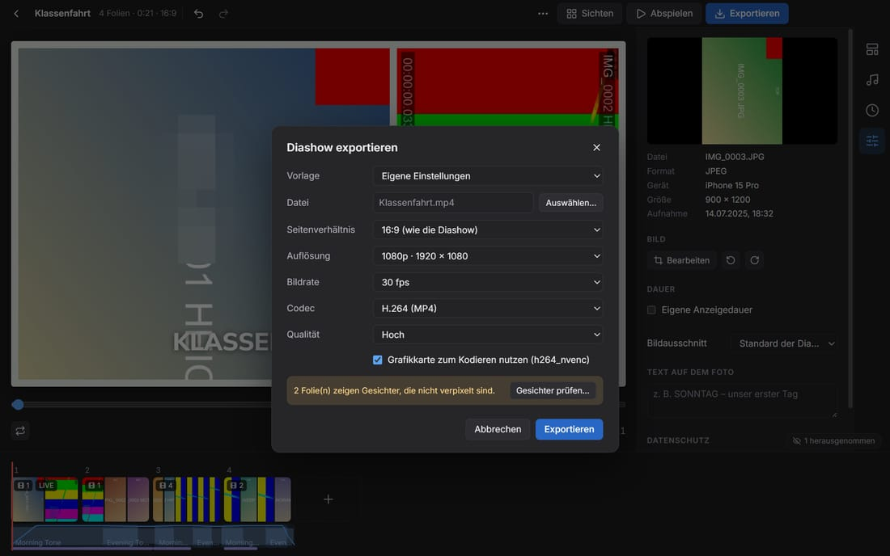
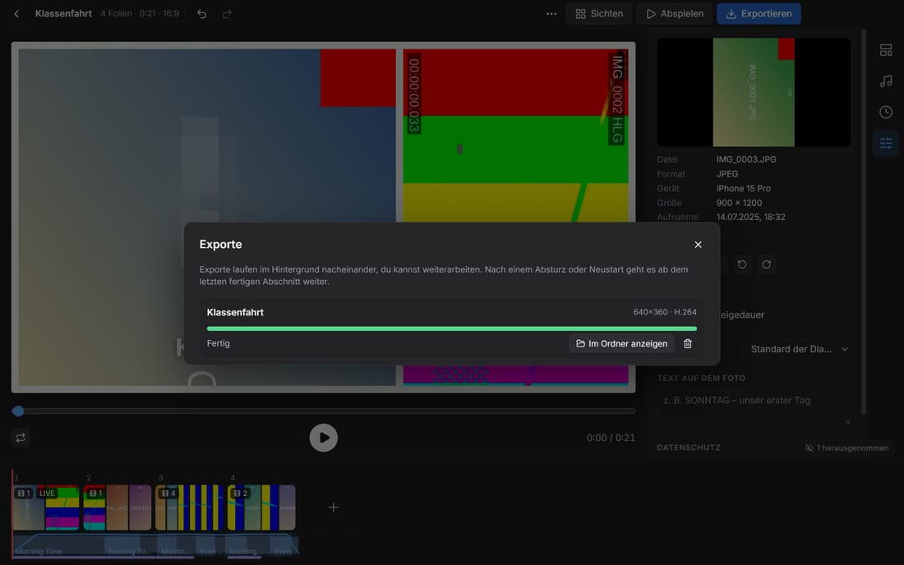
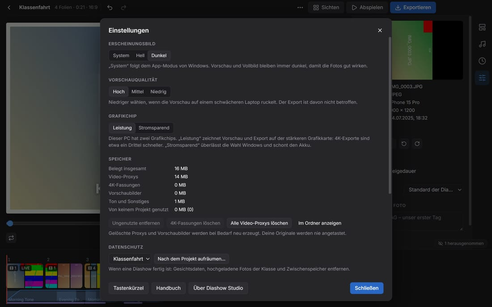

Handbuch
Alles für deine erste Diashow und darüber hinaus. Dasselbe Handbuch steckt in der App: F1 drücken.
Erste Schritte
Diashow Studio macht aus Fotos, Videos und Musik eine Diashow und speichert sie als MP4-Video. Alles läuft auf deinem PC, ohne Internet.
Am schnellsten geht es mit dem Assistenten: Er öffnet sich beim ersten Start, später über Neue Diashow mit Assistent auf der Startseite.
- Fotos und Videos: einzelne Dateien oder einen ganzen Ordner wählen. Unterordner werden mitgenommen.
- Thema und Musik: ein Thema anklicken und, wenn du magst, eigene Musik hinzufügen.
- Zeigen oder exportieren: die Diashow abspielen oder als Video speichern.

Andere Wege zur neuen Diashow:
- Fotos, Videos oder Ordner einfach ins Fenster ziehen.
- Neue Diashow wählt Dateien aus; Ordner abspielen zeigt einen Ordner sofort als Diashow.
- Projekt öffnen… lädt eine
.dshow-Datei, z. B. ein gepacktes Projekt von einem anderen PC.
Projekte werden automatisch gespeichert, in Dokumente\Diashow Studio. Neue Fotos werden im Hintergrund vorbereitet; du kannst sofort weiterarbeiten.

Bearbeiten
Der Editor hat drei Bereiche: die Vorschau in der Mitte, rechts die Reiter Themen, Musik, Dauer und Folie, und unten den Filmstreifen mit allen Folien.

- Reihenfolge: Folien im Filmstreifen ziehen. Eine Folie auf die Mitte einer anderen ziehen fasst beide zu einer Folie zusammen.
- Mehrere Folien: Strg+Klick, Umschalt+Klick oder Strg+A. Der Reiter Folie ändert dann alle zusammen.
- Anzeigedauer: am rechten Rand einer Karte ziehen; Doppelklick dort stellt wieder „automatisch“ ein.
- Ausschnitt: im Vorschaubild ziehen verschiebt das Foto, das Mausrad zoomt, Doppelklick setzt zurück.
- Texte: Text hinzufügen erzeugt eine Textfolie. Im Reiter Folie fügst du Textfelder auf ein Foto ein.
- Kapitel: im Menü ⋯ gibt es Tagestitel aus Aufnahmedatum und Kapitel aus Ordnernamen, außerdem Nach Aufnahmedatum sortieren und Abspann hinzufügen.
- Videos: im Reiter Folie kürzen, Tempo ändern (Zeitlupe/Zeitraffer) und Verwacklung beruhigen.
- Rückgängig: Strg+Z, wiederholen mit Strg+Y.
Tipp: Mit Leertaste spielst du die Vorschau ab, mit ← und → springst du von Folie zu Folie.
Fotos drehen, begradigen und zuschneiden
Schiefe oder liegende Handyfotos richtest du wie in Fotos auf dem Mac: Foto auswählen und im Reiter Folie unter Bild auf Bearbeiten klicken (oder Bearbeiten im Menü der Folie). Über der Vorschau erscheinen:
- Drehen: Die Pfeile drehen um 90° nach links oder rechts. Strg+R dreht alle ausgewählten Fotos nach links, auch auf mehreren Folien.
- Begradigen: Der Regler neigt das Bild um bis zu 45°. Es wird dabei so weit vergrößert, dass keine leeren Ecken entstehen.
- Zuschneiden: Ecken und Kanten des Rahmens ziehen oder den Rahmen verschieben. Format hält ein Seitenverhältnis fest (Frei, Original, 1:1, 4:3, 3:2, 16:9, 9:16); der Knopf daneben tauscht Hoch- und Querformat.
- Zurücksetzen holt das Original zurück, Abbrechen (Esc) verwirft die Änderungen, Fertig (Enter) übernimmt sie. Jeder Schritt lässt sich mit Strg+Z rückgängig machen.
Das bearbeitete Foto erscheint überall: in jeder Folie, beim Ken-Burns-Effekt, im Filmstreifen, beim Sichten und im Export. Den Ausschnitt in der Folie verschiebst du danach wie gewohnt. Verpixelte Gesichter bleiben auf denselben Gesichtern. Videos drehst, begradigst und schneidest du genauso zu.
Mit der Tastatur: Die Pfeiltasten verschieben den Rahmen, mit Umschalt ändern sie seine Größe.
Themen und Looks
Das Thema bestimmt, wie die Folien aussehen und wechseln. Es gibt 11 Themen, z. B. Ken Burns (langsame Fahrten über das Foto), Magazin (mehrere Fotos im Raster) oder Schnappschüsse (Sofortbilder auf einem Tisch).
- Themen mit mehreren Fotos pro Folie ordnen die Fotos selbst an. Im Reiter Folie wählst du ein anderes Layout oder Frei für eine eigene Collage.
- Der Look (Natürlich, Lebendig, Warm, Kühl, Dramatisch, Verblasst, Schwarzweiß, Noir) färbt nur die Fotos und Videos, nicht den Hintergrund.
- Fotos bildfüllend zuschneiden gilt für die ganze Show; jedes Foto kann mit Ganzes Bild eine Ausnahme sein.
- Titel: Titeltext, Schrift, Größe, Farbe und eine Animation (Handschrift, Schreibmaschine, großes Datum) stellst du im Reiter Themen ein.
- Im Thema Klassisch wählst du den Übergang (Überblenden, Schieben, Würfel …) im Reiter Dauer.
Musik
Im Reiter Musik fügst du eigene Musikdateien hinzu (MP3, M4A, WAV, FLAC und mehr). Mehrere Songs bilden eine Wiedergabeliste, die du per Ziehen ordnest.
Jedes Thema hat seine eigene Musik (CC0, frei nutzbar, auch in geteilten Videos); deine eigene Musik ersetzt sie.

- An Musik anpassen (Reiter Dauer): Die Diashow dauert genau so lange wie die Musik. Alternativ legst du eine eigene Gesamtdauer fest.
- Folienwechsel im Takt der Musik legt jeden Wechsel auf einen Schlag.
- Die Schere neben einem Song wählt Anfang und Ende, z. B. um ein langes Intro zu überspringen.
- Musik ab hier: Ein Song kann ab einer Kapitel-Folie spielen, etwa eigene Musik für jeden Tag einer Klassenfahrt.
- Bei Videos mit Ton wird die Musik automatisch leiser. Lautstärke angleichen bringt Songs und Videoton auf denselben Pegel.
Sichten
Sichten (oben rechts) zeigt alle Fotos und Videos als Raster. So gehst du einen großen Import schnell mit der Tastatur durch.

- X nimmt ein Bild aus der Diashow (es bleibt im Projekt) und holt es zurück.
- 1 bis 5 vergibt Sterne, Leertaste zeigt das Bild groß.
- Filter zeigen z. B. nur Herausgenommen, nur Bilder mit Sternen oder Unscharf & Doppelte.
- Nur ab 3 ★ in die Diashow (oder eine andere Zahl) behält nur die besten.
- Ausschuss prüfen… im Menü ⋯ findet unscharfe Fotos und Doppelte, auch dasselbe Video zweimal (z. B. aus WhatsApp).
Datenschutz: Gesichter verpixeln
Für Schülerinnen und Schüler ohne Fotoerlaubnis kannst du Gesichter verpixeln. Die Gesichtserkennung läuft offline auf deinem PC; kein Bild verlässt ihn.

- Folie auswählen, im Reiter Folie auf Gesichter verpixeln… klicken.
- Ein erkanntes Gesicht anklicken, oder mit der Maus einen Bereich aufziehen.
- Mit dem Personen-Knopf (Diese Person überall verpixeln) an einem Gesicht wird diese Person in allen Fotos und Videos der Show gesucht und verpixelt. Die Personenliste zeigt die Treffer; einen falschen Treffer entfernst du mit ✕.
- In Videos wird ein angeklicktes Gesicht durch den ganzen Clip verfolgt.
- Vor dem Export zeigt Gesichter prüfen … (Menü ⋯ oder im Export-Dialog) alle Folien mit Gesichtern, die noch nicht verpixelt sind.
Prüfe das Ergebnis immer selbst: Die Erkennung findet nicht jedes Gesicht, z. B. im Profil oder sehr klein.
Exportieren und Warteschlange
Exportieren (oben rechts) speichert die Diashow als MP4-Video. Wähle eine Vorgabe wie YouTube 1080p, WhatsApp / E-Mail (klein) oder Fernseher / Beamer – oder stelle Auflösung, Bildrate und Qualität selbst ein.

- Exporte laufen im Hintergrund, nacheinander. Du kannst währenddessen weiterarbeiten; die Titelleiste zeigt den Fortschritt.
- Jeder Export ist eine Momentaufnahme: spätere Änderungen verändern ihn nicht.
- Nach einem Absturz oder Neustart geht es mit Fortsetzen in der Liste Exporte weiter.
- Grafikkarten (NVIDIA, Intel, AMD) machen den Export deutlich schneller. Der PC geht währenddessen nicht in den Ruhezustand.

Nach dem Projekt aufräumen
Ist die Diashow fertig, entfernst du an einer Stelle, was die App zu ihr gespeichert hat: ⋯ → Nach dem Projekt aufräumen…, der Radiergummi an der Diashow auf der Startseite oder Einstellungen → Datenschutz. Der Dialog zeigt jeden Teil mit seiner Größe:
- Gesichtsdaten: erkannte Gesichter, Gesichtsmerkmale und die Personenliste mit den Namen, auch in älteren Versionen und im Zwischenspeicher. Was verpixelt ist, bleibt verpixelt, in der Vorschau und in jedem späteren Export. Neue Fotos werden danach aber nicht mehr automatisch erkannt.
- Hochgeladene Fotos und Videos der Klasse (
Dokumente\Diashow Studio\Uploads): alle oder nur die, die nicht in der Show sind. Folien mit gelöschten Fotos verschwinden aus der Show; exportiere vorher. - Zwischenspeicher (Vorschaubilder, Videokopien, Ton): entsteht bei Bedarf neu.
- Ältere Versionen und Export-Aufträge (Momentaufnahmen in der Warteschlange).
Deine eigenen Fotos, Videos und Musik und die exportierten Videos bleiben unberührt. Gelöscht wird endgültig, nicht in den Papierkorb.
Löschfrist: Im selben Dialog (oder nach dem Export) legst du fest, wann aufgeräumt werden soll: in 1, 3, 6 oder 12 Monaten oder an einem Datum. Ist der Tag da, zeigt die Startseite einen Hinweis an der Diashow und Löschfrist erreicht: aufräumen?; In einem Monat erinnern verschiebt sie.
Beim Löschen einer Diashow fragt die App, ob ihr Zwischenspeicher, die hochgeladenen Fotos und die Export-Aufträge mitgehen sollen.
Vorführen
- Abspielen zeigt die Diashow im Vollbild (Esc beendet).
- Präsentieren (Menü ⋯) zeigt die Show auf dem Beamer und auf dem Laptop die aktuelle und die nächste Folie mit Zeit und Steuerung.
- Der Kioskmodus (Einstellungen) startet die App direkt mit einer Diashow in Endlosschleife, z. B. für den Tag der offenen Tür.
Projekte sichern und mitnehmen
- Ältere Version wiederherstellen… (Menü ⋯): Vor dem Speichern wird die vorige Version aufgehoben (die letzten 20).
- Projekt packen… kopiert das Projekt mit allen Fotos, Videos und Musik in einen Ordner, z. B. für einen USB-Stick. Am anderen PC öffnest du die
.dshow-Datei. - Wurden Originale verschoben (anderer Ordner, neuer Laufwerksbuchstabe), findet Ordner durchsuchen… im gelben Hinweis sie wieder.
Beschädigte Projekte reparieren
Wurde eine Projektdatei beim Speichern unterbrochen (z. B. durch einen Stromausfall), steht sie auf der Startseite rot umrandet mit Reparieren…. Der Dialog bietet zwei Wege:
- Aus der Datei retten: Alles, was noch lesbar ist, wird übernommen. Eine Liste sagt, was fehlte oder repariert wurde.
- Automatische Sicherungen: eine ältere, vollständige Fassung öffnen.
Die beschädigte Datei bleibt in jedem Fall erhalten. Kleinere Schäden behebt die App beim Öffnen selbst und zeigt dann, was sich geändert hat.
Einstellungen und Systemcheck
Die Einstellungen öffnest du mit dem Zahnrad oben rechts (oder im Menü ⋯).

- Erscheinungsbild: System, Hell oder Dunkel (siehe unten).
- Vorschauqualität: Hoch, Mittel oder Niedrig für langsamere Laptops. Exporte sind davon nicht betroffen.
- Grafikchip (nur auf Laptops mit zwei Grafikchips): Leistung zeichnet Vorschau und Export auf der stärkeren Grafikkarte, 4K-Exporte sind dann etwa ein Drittel schneller. Stromsparend schont den Akku. Die Wahl gilt ab dem nächsten Start.
- Speicher: zeigt, wie viel Platz Vorschaubilder und Video-Fassungen belegen, und räumt auf.
- Endlos-/Kioskmodus: siehe Vorführen.
- Updates: Auf Wunsch fragt die App einmal am Tag bei GitHub nach einer neuen Version und zeigt dann einen Hinweis. Installiert wird nichts automatisch.
- Fehlersuche: Der Systemcheck prüft einen fremden PC (z. B. im Computerraum): Grafikkarte, Video-Encoder, Speicher und einen kurzen Export-Test. Bericht kopieren kopiert alles als Text. Dazu kommt das Diagnosepaket (siehe unten).
Hell oder dunkel
Unter Erscheinungsbild wählst du System, Hell oder Dunkel. System folgt dem App-Modus von Windows (Einstellungen → Personalisierung → Farben). Die Vorschau, der Vollbild-Player und die große Ansicht beim Sichten bleiben immer dunkel, damit die Fotos gut wirken.
Diagnosepaket
Klappt etwas nicht, hilft ein Diagnosepaket der Person, die dir hilft: Einstellungen → Fehlersuche → Diagnosepaket erstellen…. Vor dem Speichern siehst du jede Datei des Pakets; ein Klick zeigt ihren Inhalt. Enthalten sind Fehlerprotokoll, Systemcheck, Einstellungen, Versionen und vom geöffneten Projekt nur Anzahlen, Formate und Größen – keine Fotos, Videos, Namen oder Gesichtsdaten. Speichern… legt eine ZIP-Datei ab, die du per E-Mail schicken kannst.
Tastenkürzel
| Leertaste | Vorschau abspielen / anhalten |
| ← / → | Vorige / nächste Folie |
| Strg+Z / Strg+Y | Rückgängig / Wiederholen |
| Entf | Ausgewählte Folien löschen |
| Strg+Klick, Umschalt+Klick | Mehrere Folien auswählen |
| Strg+A | Alle Folien auswählen |
| Strg+R | Ausgewählte Fotos nach links drehen |
| Alt+Enter | Vollbild abspielen |
| Esc | Vollbild, Präsentation oder Dialog beenden |
| F1 | Dieses Handbuch |
| Alt+← / Alt+→ | Folie im Filmstreifen verschieben |
| Umschalt+F10 | Menü der Folie öffnen |
Alle Tastenkürzel und Maus-Tipps (in der App: Einstellungen → Tastenkürzel)
Mit der Tastatur bedienen
Alles in Diashow Studio geht auch ohne Maus:
- Tab und Umschalt+Tab springen von Bedienelement zu Bedienelement; das aktive ist blau umrandet. Leertaste oder Enter drücken einen Knopf.
- In der rechten Leiste wechseln ↑ und ↓ zwischen den Reitern Themen, Musik, Dauer und Folie.
- Der Filmstreifen ist ein einziger Halt für Tab: Dort gehen ← und → von Folie zu Folie und wählen sie aus (Umschalt wählt einen Bereich), Alt+← / Alt+→ verschieben die Folie, Umschalt+F10 öffnet ihr Menü.
- Menüs bedienst du mit den Pfeiltasten und Enter; Esc schließt sie.
- Esc schließt jeden Dialog; danach steht der Fokus wieder dort, wo du vorher warst.
- Bei Songs verschieben ↑ und ↓ auf der Nummer den Song in der Liste. Die Griffe zum Kürzen von Videos und Songs bewegen sich mit ← und →, mit Umschalt in größeren Schritten.
- Solange du in ein Textfeld schreibst, reagieren die Tastenkürzel nicht.
Ist in Windows „Animationseffekte“ ausgeschaltet, verzichtet auch die App auf Bewegungen in der Oberfläche. Die Diashow selbst läuft unverändert.
Wenn etwas nicht klappt
- Windows warnt beim Installieren („Der Computer wurde durch Windows geschützt“): Weitere Informationen und Trotzdem ausführen wählen. Die App ist nicht kostenpflichtig signiert.
- Die Vorschau ruckelt: in den Einstellungen die Vorschauqualität senken. Der Export wird dadurch nicht schlechter.
- Ein Video bleibt „in Vorbereitung“: Manche Handy-Videos (HEVC, HDR) werden erst umgewandelt. Das dauert, ist aber einmalig.
- Der Export ist sehr langsam: im Systemcheck nachsehen, ob ein Hardware-Encoder gefunden wird. Ohne Grafikkarte hilft eine kleinere Auflösung (720p).
- Dateien fehlen: Originale wurden verschoben – im gelben Hinweis Ordner durchsuchen… wählen.
- Dateien auf einem Netzlaufwerk bleiben gesperrt: Ein Projekt von einem anderen PC verweist auf Freigaben wie
\\server\fotos. Weil sich Windows dort mit deinem Konto anmeldet, fragt die App oben im Editor erst nach. Wähle Zugriff erlauben nur, wenn du dem Projekt vertraust; Freigaben, aus denen du selbst importierst, gelten automatisch als vertrauenswürdig. - Handys erreichen den Laptop nicht: Laptop und Handys müssen im selben WLAN sein; die Windows-Firewall muss die App zulassen. Sonst den mobilen Hotspot von Windows nutzen.
- Etwas anderes: Unter Einstellungen → Fehlersuche ein Diagnosepaket erstellen und mit einer Beschreibung an die Person schicken, die dir hilft.
- Einen Fehler melden: Problem melden… (unter Einstellungen → Fehlersuche oder in Über Diashow Studio) öffnet ein Formular auf GitHub, in dem App-Version, Windows-Version und Grafikkarte schon eingetragen sind; dafür brauchst du ein kostenloses GitHub-Konto. Der Bericht ist öffentlich: Häng höchstens das Diagnosepaket an, keine Fotos von Schülerinnen und Schülern.
Über, Lizenzen und Updates
Diashow Studio ist freie Software (MIT-Lizenz). Es enthält FFmpeg (GPL), Schriften, Modelle zur Gesichtserkennung und weitere Bibliotheken; deren Lizenzen und den Quellcode von FFmpeg findest du unter Über Diashow Studio. Dort kannst du auch Nach Updates suchen.